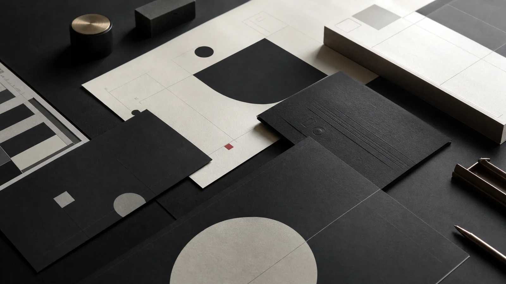

Kickoff
클라이언트 인터뷰
현재 자산과 과제 확인
목표와 범위 합의
문제를 발견하고 전략을 정의하는 일부터 아이덴티티, 공간, 콘텐츠와 브랜드 필름을 구현하는 일까지 단계마다 같은 질문과 기준을 공유합니다.
현재 상황과 목표, 고객의 기대를 깊이 이해하고 프로젝트가 만들어야 할 변화를 명확하게 정리합니다.
클라이언트 인터뷰
현재 자산과 과제 확인
목표와 범위 합의
시장과 경쟁 분석
고객 인사이트
브랜드 자산 진단
포지셔닝과 핵심 가치
프로젝트 원칙
성공 기준 설정
클라이언트 인터뷰
현재 자산 진단
과제와 목표 정리
시장·고객·경쟁 분석
인사이트 도출
기회 영역 발견
포지셔닝과 핵심 가치
브랜드 메시지
경험 원칙 수립
룩앤필과 톤앤매너
아이덴티티 방향
핵심 장면 설계
디자인 시스템 개발
접점별 적용
피드백과 보완
제작 일정과 품질 관리
협력 파트너 조율
현장 디렉션
최종 결과물 전달
론칭과 설치
운영 가이드 제공
브랜드 내재화
콘텐츠와 마케팅
지속 운영 지원
선택받아야 할 이유를 정의하고, 모든 접점이 같은 방향으로 움직일 수 있는 브랜드의 기준을 만듭니다.

시장과 고객, 브랜드 자산을 분석하고 포지셔닝과 핵심 가치를 정의합니다.
브랜드의 관점과 메시지, 네이밍과 슬로건의 언어 체계를 정리합니다.
공간, 콘텐츠와 마케팅이 같은 기준으로 확장될 운영 원칙을 설계합니다.
지금 브랜드가 놓인 상황과, 이미 가진 자산을 함께 살펴봅니다.
이번 프로젝트를 통해 만들고 싶은 변화와 우선순위를 정리합니다.
일정과 예산, 내부 의사결정의 흐름에 맞는 현실적인 실행 방식을 제안합니다.